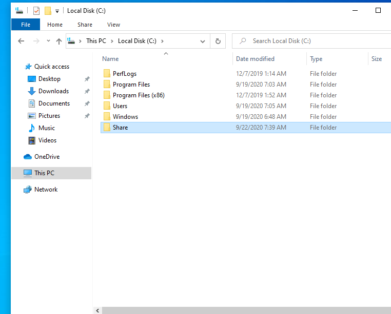

we'll do this for The punisher's machine (domain equivalent of this is Frank Castle) and then let you do this in same way with The Spiderman's machine.(domain equivalent of this is Peter Parker)
Go to C drive and add a folder called share

right click to this folder > properties > go to sharing tab > Share > Share

and then say "Yes, turn on network discovery and file sharing for all public networks"
now sharing is done now join this to the domain controller.
for that we need to domain controller's ip

then go to frank castle
go to Network & Internet Settings


double click to highlighted

say ok then

access work or school > Connect >


and then for username and password say Administrator P@$$w0rd!
then say skip

restart
so this is going to reboot when it reboots you're gonna need to log in as your user. So how is set up this domain is this user is going to be frank castle so fcastle is going to log into the punisher.

username:fcastle
password:Password1
everything we've done so far apply the same on the other machine(Peter Parker)
we can succesfully log into that account with these credentials. That's the consequence of being join to the Domain Controller.

now let's try log into by creating an administrator account to that.

we gotta do marvel\ by the way in order to sign into marvel
password will be P@$$w0rd!
after log in what we're going to do is we're going to enable Frank Castle to be a local administrator on this machine.
Then we're gonna go ahead and we're going to navigate over to spiderman's machine and we're gonna set Frank Castle to be a local administrator there.
There is two special attacks that involve the usage of local administrators on multiple machines.
let's go ahead and open the computer management by right clicking to start icon.


double click to that.

say add
write fcastle and then say "Check Names"

say ok

now let's open peter parker and we're going to setup Frank Castle and Peter Parker as administrators as well.
administrator members should look like this in peter parker:

after that let's go to our server machine and take a look at computers section.

now we can say that we have succesfully joined this domain controller.
We did turn off windows defender but for the most part we've got normal default settings for pretty much everything.
So, so far besides turning off the defender everything is pretty common across the board for how you would see an Active Directory network set up. So from here we're going to exploit these settings almost default configurations.